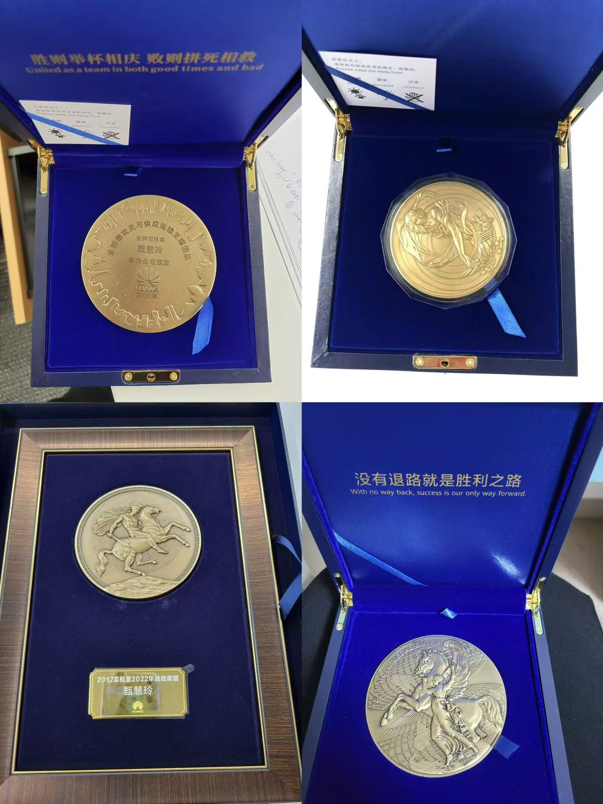
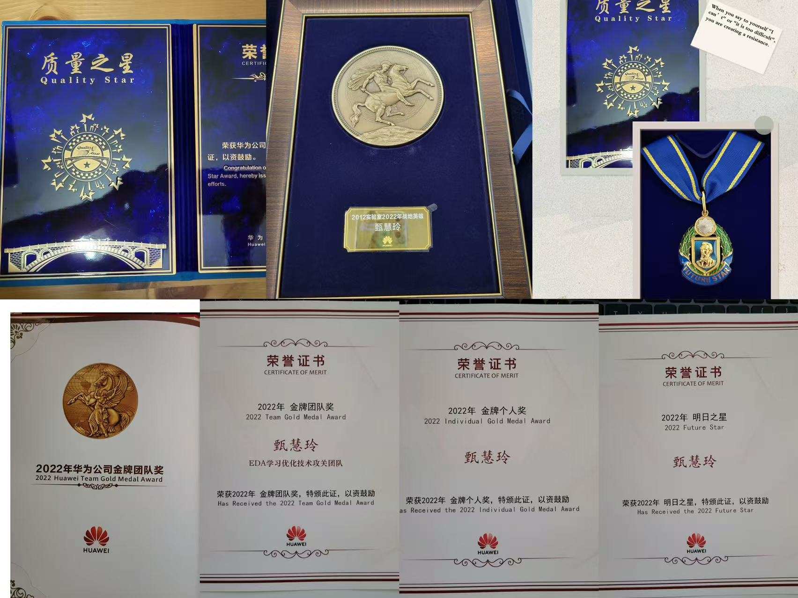
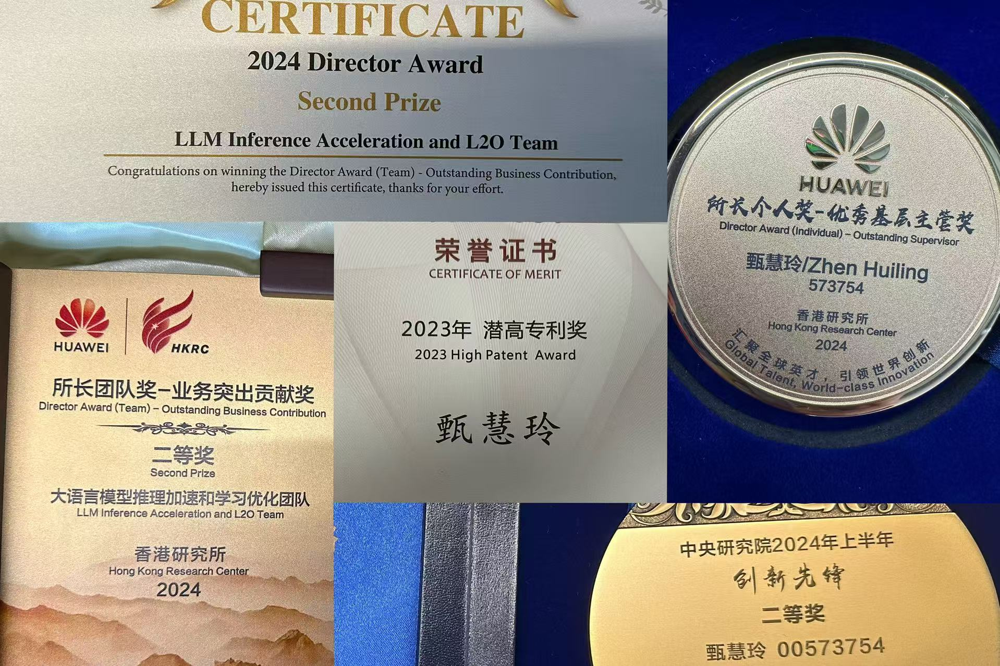

Hui-Ling Zhen
Senior Staff Researcher | AI/LLM for EDA | Agent Algorithms | Industrial Verification
I work on agent algorithms and their industrial applications in formal verification and testing, with a focus on AI/LLM for EDA, long-context training, post-training, agent self-evolution, and large-scale optimization.
Email GitHub Google Scholar LinkedIn
Please feel free to email me if you are interested in AI agents, LLMs for EDA, industrial verification, testing, or large-scale optimization. I am always happy to discuss research ideas and collaborations.

About
I am a Senior Staff Researcher at Huawei, working on foundation models, agent algorithms, and industrial AI systems for EDA. My recent work focuses on building reliable agentic systems for formal verification and testing, including SAT-based reasoning, RTL code generation, bug finding, verifier-guided optimization, and self-evolving agents.
My research background spans machine learning, numerical optimization, combinatorial optimization, and industrial verification. I have worked on AI-augmented SAT solvers, data augmentation for EDA, LLM-driven Verilog generation, agent training and deployment, long-context modeling, and post-training methods for reasoning and tool-using agents.
Experience
Huawei Noah's Ark Lab / Foundation Model Department
Hong Kong | 2019 - Present
Senior Staff Researcher, 2025-Present; Staff Researcher, 2021-2024; Research Scientist, 2019-2021.
City University of Hong Kong
Hong Kong | 2017 - 2019
Postdoctoral Research Fellow working on optimization, machine learning, and related algorithmic foundations.
Education
- Ph.D. in Numerical Optimization, Beijing University of Posts and Telecommunications, 2013 - 2017.
Outstanding Graduate Award. - M.S. in Mathematics, Beijing University of Posts and Telecommunications, 2011 - 2013.
GPA: 3.92/4.0; Academic Ranking: 2/64.
Research Highlights
AI/LLM for EDA
AI-augmented SAT solving, data augmentation, and LLM-driven modeling for ATPG, LEC, model checking, testbench generation, and bug finding.
Industrial Agents
Production agent systems with tool invocation, memory, collaborative reasoning, execution-time recovery, verifier feedback, and continuous improvement loops.
Agentic RL
Post-training for reasoning and tool-using agents, including reward shaping, rollout optimization, dense supervision, and training-inference co-design.
Selected Projects
LLM and Agents for Industrial EDA
Developed industrially viable AI-driven SAT solving and data augmentation methods for formal verification and testing.
Applications include ATPG, LEC, bug finding, model checking, and Verilog generation.
Industrial-Grade Agent Deployment
Built and maintained agent systems for formal verification, bug finding, code review, and deep research.
Focus areas include tool fusion, collaborative reasoning, recovery, and production reliability.
Agentic RL and Co-design
Designed post-training pipelines for large reasoning and agentic models under fixed compute budgets.
Topics include difficulty-aware rewards, pass@k training, verifier-based optimization, long-context modeling, and quantization.
Selected Publications
A selected list of my work on optimization, AI for EDA, SAT, and learning-based decision making. Please see my Google Scholar for the full and latest list.
- Conflict-driven Structural Learning Towards Higher Coverage Rate in ATPG
Hui-Ling Zhen, Naixing Wang, Junhua Huang, Xinyue Huang, Mingxuan Yuan, Yu Huang
ETS 2023 | paper - Neural Fault Analysis for SAT-based ATPG
Junhua Huang, Hui-Ling Zhen, Naixing Wang, Hui Mao, Mingxuan Yuan, Yu Huang
ITC 2022 | paper - Accelerate SAT-based ATPG via Preprocessing and New Conflict Management Heuristics
Junhua Huang, Hui-Ling Zhen, Naixing Wang, Mingxuan Yuan, Hui Mao, Yu Huang, Jiping Tao
ASP-DAC 2021 | paper - A Survey for Solving Mixed Integer Programming via Machine Learning
Jiayi Zhang, Chang Liu, Xijun Li, Hui-Ling Zhen, Mingxuan Yuan, Yawen Li, Junchi Yan
Neurocomputing 2022 | paper - Machine Learning Methods in Solving the Boolean Satisfiability Problem
Wenxuan Guo, Junchi Yan, Hui-Ling Zhen, Xijun Li, Mingxuan Yuan, Yaohui Jin
Machine Intelligence Research 2022 | paper - Pareto Multi-task Learning
Xi Lin, Hui-Ling Zhen, Zhenhua Li, Qing-Fu Zhang, Sam Kwong
NeurIPS 2019 | paper
Awards and Honors
- Huawei Gold Medal Individual Award and Gold Medal Team Award, 2022, 2023, 2024.
Recognized among the top 1% contributors. - Field Hero Award for Critical Projects, 2023, 2024.
- High-Potential Patent and Outstanding Business Contribution Award.
- Outstanding Graduate Award, Beijing University of Posts and Telecommunications.
Selected award moments and recognitions.

Gold Medal Recognition

Critical Project Award

Patent and Business Contribution
Contact
Please feel free to reach out for research discussions and collaborations.